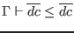
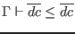

To simplify the judgments in this section, we assume that all signatures are alpha-varied as necessary to avoid including multiple bindings for the same identifier. This is in addition to the usual alpha-variation of locally bound variables.
We rely on a judgment
, which expresses the occurrence in signature items
 of an item compatible with
. We also use a judgment

, which expresses compatibility of datatype definitions.
of an item compatible with
. We also use a judgment

, which expresses compatibility of datatype definitions.